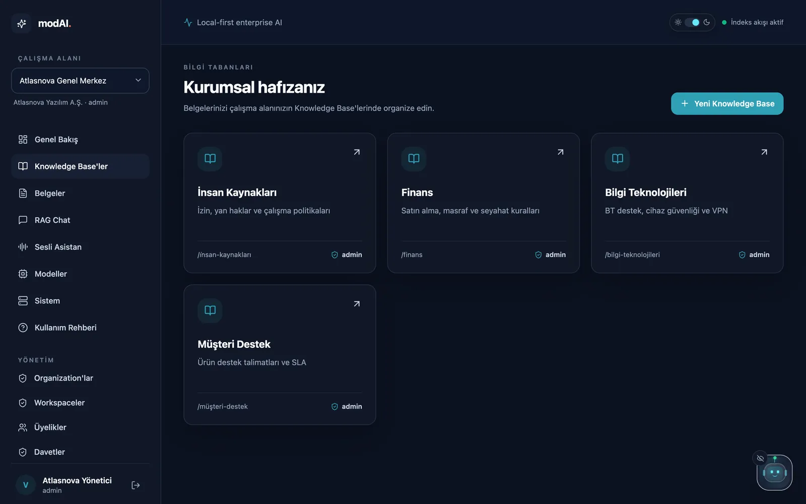
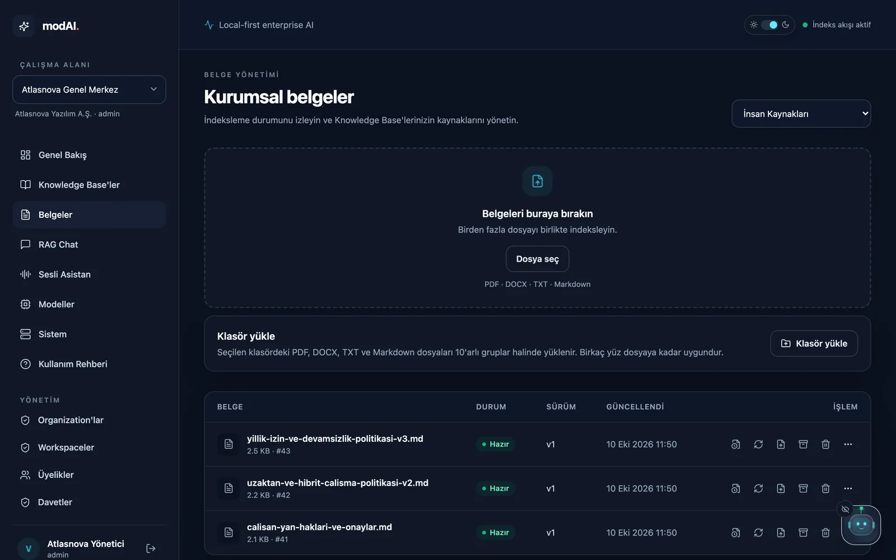
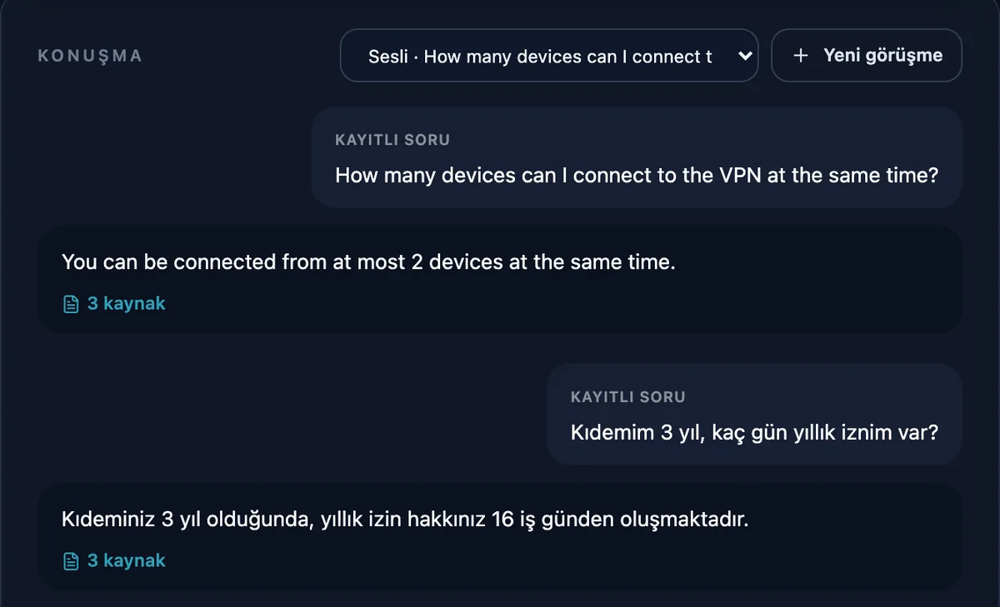

Şirket bilginiz, sizin altyapınızda.
modAI, şirket belgelerinizden yanıt veren bir asistan. Kendi sunucunuzda çalışır, her yanıtı dayandığı belgeyle gösterir ve belgede olmayanı uydurmaz.
Türkçe ve İngilizce arayüz, Türkçe sesli asistan. İzin, satın alma ve masraf talepleri onaylı adımlarla. Sipariş günü lisans anahtarı ve internetsiz kurulum paketi.
Gerçek sistem yanıtları: kurgusal Atlasnova demo belgeleri, test ortamı, Gemma 3 4B ve BGE-M3. Dayanak gösterimi burada sadeleştirildi.
Neyi farklı yapıyor?
Genel bir sohbet botu değil. Şirketinizin belgelerine bağlı, sınırlarını bilen bir asistan.
- İşi de yapar, onayla.
- "3 gün izin almak istiyorum" yazan çalışana izin talebini önerir, formu cümlesinden doldurur. Onaycı, talepten hesaplanan sayıları ("başvuru ile başlangıç arasında 4 iş günü") politikanın kendi cümlesinin yanında görür. Talep sırayla onaylanır; izindeki yönetici vekâlet verir, bekleyen adım hatırlatılır. Son onaydan sonra talep İK, ERP ya da talep sistemine imzalı olarak iletilir. Kimse kendi talebini onaylayamaz; her adım kayıtlıdır.
- Dayanak: Talepler
- Bilmediğini söyler.
- Seçili bilgi tabanlarında soruyu karşılayan belge yoksa dil modeli hiç çağrılmaz; “belge bulunamadı” der. İlgisiz bir bölümle de yanıt vermez: çok dilli aramada ölçülmüş bir ilgililik eşiğinin altındaki sorular yanıtlanamayan sorular raporuna düşer. İki tablo satırının sınırında kalan sorularda tahmin yürütmez, belge sahibine yönlendirir.
- Dayanak: güvenlik mimarisi
- Her yanıt dayanağıyla gelir.
- Yanıtın dayandığı belge, bölüm ve alıntı yanıtın yanında görünür. Çalışan tek tıkla doğrular; önemli kararlarda belgeye dönmek kolaydır.
- Dayanak: kurumsal kullanım kılavuzu
- Türkçe sorun, İngilizce belgede bulsun.
- Çok dilli arama (BGE-M3), Türkçe bir soruyu İngilizce yazılmış prosedürlerle de eşleştirir. Yanıt sorunun dilinde gelir.
- Dayanak: çok dilli arama rehberi
- Departman sınırı aramadan önce uygulanır.
- İK, Finans ve BT belgeleri ayrı bilgi tabanlarında durur; herkes yalnızca yetkili olduğu yerde arar. Arşive alınan eski sürümler yanıtlara girmez.
- Dayanak: roller ve bilgi tabanları
- Sayıları tablodan okur.
- “40.000 TL'lik alımı kim onaylar?” gibi sorularda tutar, tablodaki doğru satırla eşleştirilir. “Kırk bin lira” ya da İngilizce “40,000” yazımı da doğru okunur.
- Dayanak: kurumsal kullanım kılavuzu
- Politikalar sessizce eskimez.
- Her belgenin bir sahibi ve gözden geçirme tarihi vardır. Tarihi geçmiş bir belgeye dayanan yanıtta kaynak kartı uyarır; yöneticiler bekleyen belgeleri tek listede görür.
- Dayanak: belge sahibi ve gözden geçirme
- Kalitesi ölçülür, tahmin edilmez.
- Kabul soruları Kalite panelinde durur ve kullanıcıların kullandığı arama ve modelle yeniden sorulur; gece çalıştırılabilir. Her çalıştırma, belgeye gizlenmiş talimatlara karşı 9 güvenlik testini de yapar ve sonucu olduğu gibi gösterir; Güven raporu bunları PDF olarak verir. Yanıtlanamayan sorular raporu eksik bilgiyi, çalışanların 👎 ile işaretlediği yanıtlar yanlış ya da eski belgeyi gösterir.
- Dayanak: kabul testi
- Videolarınızı ve taranmış belgelerinizi de okur.
- Eğitim videoları ve toplantı kayıtları dakika dakika yazıya dökülür; yanıt, söylendiği dakikayı gösterir. Kayıttan tutanak taslağı çıkarılır: kararlar, aksiyonlar ve sorumlular. YouTube videoları için indirme gerekmez: döküm ya da yapay zekâ özeti yapıştırılır. Taranmış PDF ve görseller Türkçe metin tanımayla okunur.
- Dayanak: taranmış belge, ses ve video
- Şirket hesabıyla girilir.
- Çalışanlar ayrı bir parola yerine Microsoft Entra ID, Google Workspace ya da Keycloak hesabıyla (OpenID Connect) ya da doğrudan Active Directory kullanıcı adı ve şifresiyle girer. İşten ayrılan kişi şirket hesabı kapanınca modAI'a da giremez.
- Dayanak: SSO kurulumu
- Kendi sunucunuzda çalışır.
- Belgeler, arama dizini, dil modeli ve ses modelleri şirketinizin makinesindedir. Kurulumdan sonra yanıt üretmek için internet bağlantısı gerekmez.
- Dayanak: kurulum ve teslim rehberi
Kurulumdan ilk soruya dört adım.
Ekran görüntüleri ürünün kendisinden; kurgusal Atlasnova Yazılım şirketinin demo verisiyle.





Konuşarak sorun, dinleyerek öğrenin.
Masa başında ya da sahada aynı bilgiye kısa yol: soruyu söyleyin, yanıtı modAI'nin Türkçe sesiyle dinleyin, kaynağı ekranda görün.
- Konuşma, şirketinizin modAI sunucusunda yazıya çevrilir. Ses kaydı şirket dışına çıkmaz ve saklanmaz; isterseniz tanıma tamamen tarayıcıda da yapılır.
- Yanıt, ürünle gelen Türkçe nöral sesle okunur; okuma hızı ayarlanabilir.
- Göndermeden önce soru ekranda gösterilir; yanlış duyulan kelime düzeltilebilir.
- Sesle anlatılan iş de talep olarak başlar: "gelecek hafta üç gün izin istiyorum" diyen çalışana izin talebi önerilir.
- Görüşmeler saklanır; sayfadan çıkıp döndüğünüzde kaldığınız yerden devam edersiniz.
Şirket içinde nerede işe yarar?
Kurum içi yapay zekâda en çok ölçülen kazanç, tekrar eden soruların ve bilgi aramanın azalmasıdır. modAI bunları şirketin kendi belgeleriyle, kaynak göstererek yapar.
- İK politika soruları
- İzin, yan haklar, uzaktan çalışma, masraf: çalışan kendisi sorar, yanıt yönetmelikteki maddeyle gelir. İK ekibine düşen tekrar eden sorular azalır.
- BT yardım masası
- VPN, parola, cihaz kaybı ve erişim adımları prosedürden okunur. Yanıtlanamayan sorular raporu hangi kılavuzun eksik olduğunu gösterir.
- Eğitim ve oryantasyon
- Oryantasyon videoları ve kayıtlı eğitimler aranabilir olur; yeni çalışan "bu nerede anlatıldı?" sorusunun yanıtını dakikasıyla bulur.
- Müşteri destek ekipleri
- Ürün talimatları, SLA ve eskalasyon kuralları tek yerde. Eski sürüm arşivlenince yanıtlar yalnızca güncel talimattan gelir.
- Finans ve satın alma
- Onay limitleri ve harcama kuralları tablodaki doğru satırdan okunur; "40.000 TL'lik alımı kim onaylar?" gibi sorular tahminle değil, tabloyla yanıtlanır.
- Kalite ve denetim
- Prosedürlerin sahibi ve gözden geçirme tarihi tutulur; süresi geçen belgeye dayanan yanıt uyarı taşır. Her yanıtın hangi belge sürümüne dayandığı izlenir; bir prosedür düzeltildiğinde ona dayanan yanıtlar bulunur.
- Toplantılar
- Toplantı kaydı ya da notu yüklenir, tutanak taslağı çıkar: kararlar, aksiyonlar, sorumlular ve tarihler, söylendiği dakikayla. Taslak düzenlenip bilgi tabanına kaydedilir; "bu karar ne zaman alındı?" sorusu yanıtlanabilir.
- Satış ve teklif hazırlığı
- Ürün bilgileri, indirim politikası ve sözleşme şartları tek yerde. Satış ekibi müşteriye vereceği bilgiyi politikadan, kaynağıyla okur.
Bilgi şirketinizden çıkmaz.
Belgeler, arama dizini, dil modeli ve ses modelleri şirketinizin makinesinde çalışır. Çalışanlar tarayıcıdan bağlanır.
Çalışanın tarayıcısı
- Arayüz ve sesli asistan
- Türkçe ses (EMA Lightning)
- İsteğe bağlı: cihazda konuşma tanıma
Şirketinizin sunucusu
- modAI: yetki, arama ve indeksleme
- PostgreSQL: kullanıcılar, belgeler ve denetim kaydı
- Qdrant: arama dizini; Valkey: iş kuyruğu
- Ollama ve Gemma 3: yanıt üretimi
- BGE-M3: çok dilli arama
- Whisper Small: konuşma tanıma
Dış yapay zekâ servisi kullanılmaz. Belgeler ve sorular üçüncü taraflara gönderilmez.
- Davet ve roller. Hesaplar davetle açılır; erişim rol ve kapsamla verilir.
- Şirket hesabıyla giriş. OpenID Connect ile Entra ID, Google Workspace ve Keycloak ya da doğrudan Active Directory (LDAP); ayrı parola yok.
- Departman ve belge sınırı. Arama, kullanıcının yetkili olduğu bilgi tabanlarıyla sınırlanır. Dosyanın klasör ya da SharePoint izni belgeyle gelir: kısıtlı bir belgeyi yalnızca okuyucuları bulur.
- Onaylı iş akışları. İzin, satın alma, masraf ve BT erişimi talepleri. Onaycı politikayla hesaplanan sayıları yan yana görür. Dört göz ilkesi, vekâlet ve hatırlatma vardır. Onaydan sonra imzalı webhook ve Teams/Slack bildirimi gider; talepler CSV raporu olarak indirilir.
- Bağlı kaynaklar. Dosya sunucusundaki bir klasör ya da bir SharePoint kitaplığı bilgi tabanıyla eşit kalır: yeni dosya eklenir, değişen yeni sürüm olur, silinen arşivlenir.
- Denetim kaydı. Belge yükleme, silme, arşiv ve yetki işlemleri kaydedilir.
- Yanıt izi. Her yanıtın hangi belge sürümlerine dayandığı tutulur; soru ve yanıt metni tutulmaz.
- Uzman onaylı yanıtlar. Bir uzmanın onayladığı yanıt aynı soruya modele sorulmadan verilir; kaynak belge değişince onay düşer.
- Model seçimi, sınayarak. Sunucudaki başka bir yerel model önce Kalite ve güvenlik testlerinden geçer, sonra etkinleşir; belgeler yeniden indekslenmez.
- Güven raporu. Kurulum, erişim, saklama, kalite ve güvenlik testleri tek sayfada; PDF olarak satın alma dosyasına eklenir.
- Gizli talimatlara karşı. Belgedeki görünmeyen yorumlar ve yapay zekâya hitap eden cümleler modele gitmez; Kalite sayfası 9 senaryoyla ölçer.
- HTTPS. Ağdan çok kullanıcılı kurulumlar için hazır HTTPS katmanı.
- Kurulum, yedek ve güncelleme. Tek komutla kurulum, yedek, güncelleme ve geri alma. Yedek ikinci bir diske de kopyalanır ve tek komutla geri yüklenir.
- modAI Kutusu. Kurulu gelen cihaz: prize ve ağa takılır, tarayıcıda etiketteki kurulum koduyla açılır. Bekçi, takılan servisi yeniden başlatır.
- İnternetsiz kurulum paketi. Her sürüm imajları, modelleri ve sağlama özetleriyle tek klasör olarak teslim edilir; kurulum ve güncelleme internete çıkmadan yapılır, tek komutla geri alınır.
- Kurumsal kimlik. Şirket hesabıyla giriş (Entra ID, Okta, Google Workspace, Keycloak) ya da Active Directory, dizin gruplarından çalışma alanı rolleri ve SCIM 2.0 ile hesap açma-kapatma: işten ayrılan kişi dizinde kapatılınca modAI'ye de giremez.
- Model seçimi ve lisans görünürlüğü. Yönetici makinedeki yerel modeller (Gemma, Qwen ve kendi uyarlamalarınız) arasından seçer; her model önce Kalite ve güvenlik testlerinden geçer, lisansı listede görünür.
- Kur ve unut. Gece yedeği kendiliğinden alınır ve diski doldurmayacak şekilde seyreltilir; disk azalınca yönetici uyarılır, kapasite kartı ne zaman büyütmek gerektiğini söyler.
- Ölçülmüş kapasite. 16 GB'lık bir makinede aynı anda 4 soruda yanıtların %95'i 10 saniyenin altında; yaklaşık 250 çalışana kadar rahat. Yük testi müşterinin makinesinde de çalışır.
- KVKK araçları. Kişisel veri dökümü, görüşme ve hesap silme yönetim panelindedir. Veri envanteri
- Saklama süreleri. Görüşmelerin süresi ayarlanır; denetim kaydındaki IP adresleri ve yedekler 6 ay sonra silinir, loglar boyutla sınırlıdır.
- Lisanslar. PostgreSQL, Qdrant, Valkey ve Ollama izin verici lisanslıdır. Lisanslama özeti
- Tedarik zinciri ve güvenlik belgesi. Her pakette bileşen listesi (SBOM, CycloneDX) bulunur; bağımlılıklar bilinen açıklara karşı taranır. Güvenlik mimarisi
Hangisi size uygun?
modAI daha ucuz bir ChatGPT değil; şirket bilgisinin nerede durduğu ve nasıl kullanıldığı üzerinde kontrol.
Genel amaçlı bir yapay zekâ aracı daha iyi olabilir, eğer
- en güçlü bulut modellerine hemen erişmek istiyorsanız,
- Google Drive ya da Confluence gibi bulut kaynaklarından hazır eşitleme istiyorsanız (modAI ağ klasörünü ve SharePoint'i eşitler; diğerleri yükleme ya da klasörle gelir),
- verinin bir bulut hizmetinde işlenmesi sizin için sorun değilse.
modAI daha uygun, eğer
- şirket belgeleriniz şirket dışına çıkmamalıysa,
- yanıtların belgeye dayanması ve doğrulanabilmesi gerekiyorsa,
- departmanlar arası erişim sınırı önemliyse ve erişimin şirket dizininizdeki gruplardan (Active Directory, Entra ID, Okta, Keycloak) ve dosya izinlerinden gelmesini istiyorsanız,
- Türkçe ve sesli kullanım istiyorsanız,
- kullanıcı başı aylık abonelik yerine yıllık lisans tercih ediyorsanız.
Bulut asistanlarıyla yan yana.
Şirket bilgisi nerede işlenir, internet kesilince ne olur, 250 kişilik bir şirket yılda ne öder?
| Konu | modAI | Bulut yapay zekâ asistanları ör. Microsoft 365 Copilot, ChatGPT Business |
|---|---|---|
| Belgeler ve sorular nerede işlenir? | Şirketinizin sunucusunda ya da modAI Kutusu'nda | Sağlayıcının bulutunda |
| İnternet kesilince | Çalışmaya devam eder | Çalışmaz |
| Fiyat modeli | Sabit yıllık lisans | Kullanıcı başına aylık abonelik |
| 250 kişi, bir yıl | 9.900 € (Business) | 60.000 $ (20 $/kişi/ay) – 90.000 $ (30 $/kişi/ay, ayrıca Microsoft 365 lisansı) |
modAI'de kurulumla hazır gelenler: kaynak gösteren ve belge yoksa uydurmayan yanıtlar; izin, satın alma, masraf ve erişim için onaylı talepler; Türkçe sesli asistan; Active Directory, SSO ve SCIM; Kalite ölçümü ve Güven raporu; KVKK araçları.
Bulut fiyatları Ekim 2026 liste fiyatlarıdır (ChatGPT Business yıllık 20 $, Microsoft 365 Copilot kurumsal yıllık 30 $); vergiler hariç. Satın almadan önce sağlayıcının güncel fiyatını kontrol edin.
Fiyatlar
Dar ve ölçülebilir bir pilotla başlayın. Gerçek belgelerinizde işe yaradığını gördükten sonra genişletin.
Pilot
2.900 € tek seferlik
Seçilmiş şirket belgeleri ve sınırlı bir kullanıcı grubuyla 2–4 haftalık doğrulama.
- 30 günlük lisans, 25 kullanıcı
- Şirketinizde kurulan özel pilot
- 1–2 bilgi tabanı, seçilmiş belgeler
- Rol bazlı pilot erişimi
- Yerel yapay zekâ yapılandırması
- Kaynaklı yanıtlar için kabul testi
- Bulgular ve yaygınlaştırma önerisi
- Bedeli ilk yıl lisansından düşülür
Business Önerilen
9.900 € yıllık
Desteklenen, özel bir bilgi asistanı isteyen ekip ya da iş birimi için.
- Yıllık lisans, 250 kullanıcıya kadar
- Kendi sunucunuzda üretim kurulumu
- Birden fazla çalışma alanı ve bilgi tabanı
- Rol bazlı kullanıcı erişimi
- Kaynaklı kurumsal yanıtlar ve sesli asistan
- Standart kurulum ve güncelleme rehberliği
- İş destek kanalı
Enterprise
19.900 €+ yıllık
Özel kapsam, entegrasyon ya da kurulum desteği gerektiren geniş kurulumlar için.
- Business'taki her şey; kullanıcı sayısı sözleşmeye göre
- Çok ekipli kurulum kapsamı
- Özel altyapı planlaması
- Özel iş akışı ve entegrasyon çalışması
- Model ve arama yapılandırma desteği
- Öncelikli kurulum desteği; özel SLA ve ticari koşullar
Fiyatlara vergiler, özel donanım ve üçüncü taraf model ya da API ücretleri dahil değildir. Özel entegrasyonlar, SAML, yüksek erişilebilirlik mimarisi, sertifikasyonlar ve müşteriye özel uyumluluk çalışmaları ticari sözleşmede açıkça kapsamlanmadıkça dahil sayılmaz. Ticari lisans koşulları
Bugün sipariş, bugün kurulum.
Sipariş, lisans anahtarı ve kurulum aynı gün. Yıllık lisansa geçerken yeniden kurulum yok; belgeleriniz ve ayarlarınız yerinde kalır.
- 20 dakikalık demoCanlı ya da video. Kendi sorularınızı getirin.
- Pilot siparişiTek sayfalık sipariş formu, e-imza. Ödeme havale ya da kartla.
- Aynı gün lisans ve paketLisans anahtarı ve kurulum paketi e-postayla gelir. İsterseniz modAI Kutusu kurulu gelir.
- Bir saatlik kurulumPaket internetsiz kurulur, anahtar Lisans ekranına yapıştırılır. İlk bilgi tabanını ve ilk soruları birlikte yaparız.
- Yıllık lisansYeni anahtar yapıştırılır, hepsi bu. Pilot bedeli ilk yıl lisansından düşülür.
Türkiye
- Fiyat Euro; fatura TL olarak, fatura günündeki TCMB döviz satış kuruyla kesilir.
- e-Fatura. Ödeme havale/EFT ya da kartla ödeme bağlantısıyla.
- Türkçe kurulum ve destek.
Yurt dışı
- Euro fatura, banka havalesi (SWIFT).
- İngilizce kurulum oturumu; yanıtlar sorunun dilinde.
- Apple silicon, ARM ya da x86_64 sunucu için paket.
Pilot siparişi verin info@wearetheartmakers.com · +90 505 314 9360
Sık sorulanlar
Ne kadar sürede kullanmaya başlarız?
Sipariş günü. Lisans anahtarı ve kurulum paketi aynı gün e-postayla gelir; paket internetsiz kurulur (ölçümümüzde 80 saniye) ve bir saatlik oturumda ilk bilgi tabanınızla soru sorarsınız. modAI Kutusu seçilirse cihaz kurulu gelir.
Lisans anahtarı nasıl çalışır? İnternet gerekir mi?
Anahtarı WATAM imzalar; kurulumunuz onu kendi içinde, internete çıkmadan doğrular. Lisans sunucusu yoktur. Anahtar lisans sahibini, paketi, bitiş tarihini ve kullanıcı sayısını taşır. Yenilemede yeni anahtar yapıştırılır; bitişten önce yöneticiler uyarılır, sonrasında 14 gün ek süre vardır.
Kaynak kodunu veriyor musunuz?
Hayır. modAI tescilli bir üründür; kullanım hakkı lisansla verilir. Kurulum paketi uygulamayı imajlar olarak içerir. Güvenlik incelemesi için güvenlik mimarisi belgesi, bileşen listesi (SBOM) sunarız; gerekirse gizlilik sözleşmesiyle gözetimli bir kod inceleme oturumu düzenlenebilir.
ChatGPT, Claude ya da Copilot'un yerine mi geçer?
Hayır. modAI şirket bilgisine dayalı yanıt katmanıdır: erişim sınırları, kurulum kontrolü ve kaynaklı yanıtlar. Genel yazım ve araştırma için bu araçlar kullanılmaya devam edilebilir.
Hangi donanım gerekir?
Docker ve Ollama çalıştırabilen, en az 16 GB bellekli bir Mac ya da Linux sunucu; 32 GB önerilir. Ölçümlerimiz Apple M1 Pro 16 GB üzerindedir. Dil modeli (Gemma 3 4B) yaklaşık 4–4,6 GB, çok dilli arama yaklaşık 2 GB bellek kullanır.
İnternet bağlantısı gerekir mi?
Hayır. Kurulum paketi modelleri de içerir; kurulum, güncelleme ve lisans doğrulaması internete çıkmadan yapılır. Arama ve yanıt üretimi şirketinizin ağı içinde çalışır; belgeler ve sorular dışarı gönderilmez.
Hangi belgeler yüklenebilir?
PDF, DOCX, TXT ve Markdown; DOCX tabloları korunur. Taranmış PDF ve görseller (PNG, JPG, TIFF) Türkçe ve İngilizce metin tanımayla okunur. Ses ve video kayıtları (örneğin YouTube Studio'dan indirilen şirket videoları) dakika dakika yazıya dökülür; yanıtın kaynağı söylendiği dakikayı gösterir. Hepsi şirketinizin sunucusunda işlenir.
Eski ve yeni sürüm belgeler karışmaz mı?
Güncellenen belge “Belgeyi değiştir” ile yeni sürüm olarak yüklenir. Eski bir politika arşive alınabilir; arşivdeki belgeler yanıtlarda kullanılmaz ve istenirse geri alınır.
KVKK açısından nasıl değerlendirilir?
Belgeler, sorular ve yanıtlar şirketinizin altyapısında kalır; ses kaydı yalnızca kendi sunucunuzda yazıya çevrilir ve saklanmaz. Ürünle bir veri envanteri gelir: hangi kişisel veri nerede, neden ve ne kadar süre tutulur. Erişim ve silme talepleri için kişisel veri dökümü, görüşme ve hesap silme yönetim panelindedir. Bir uyumluluk sertifikası iddia etmiyoruz.
SSO, sertifika ya da yüksek erişilebilirlik var mı?
Ürünle gelenler: şirket hesabıyla giriş (OpenID Connect: Microsoft Entra ID, Google Workspace, Keycloak, Okta), doğrudan Active Directory (LDAP), SCIM 2.0 ile hesap açma-kapatma ve ağ kurulumu için HTTPS. SAML ve yüksek erişilebilirlik ayrı proje olarak kapsamlanır. Otomatik devralma yoktur; ikinci bir makine sıcak beklemede tutulup dakikalar içinde devralabilir ve yedeklerin geri yüklenebildiği düzenli tatbikatla kanıtlanır. Bağımsız sızma testi planlanıyor; her sürümde otomatik yetki taraması çalışır; güvenlik önlemleri ve eksikler güvenlik mimarisi belgesindedir. Bir güvenlik sertifikası (ISO 27001, SOC 2) iddia etmiyoruz.
Fiyata donanım dahil mi?
Hayır. Sunucu, GPU, depolama ve üçüncü taraf model ya da API ücretleri, proje kapsamına açıkça yazılmadıkça dahil değildir.
Neden ücretli pilot?
Pilot, gerçek belgelerinizle yanıt kalitesini, erişim tasarımını ve kurulum uyumunu büyük bir yaygınlaştırmadan önce ölçer. Sonuç, birlikte hazırladığımız sorulardan oluşan kabul testiyle somutlaşır.
Kendi belgelerinizle 2–4 haftalık pilot.
Bir departman, seçilmiş belgeler ve küçük bir kullanıcı grubu. Sonucu birlikte hazırladığımız sorularla ölçüyoruz.